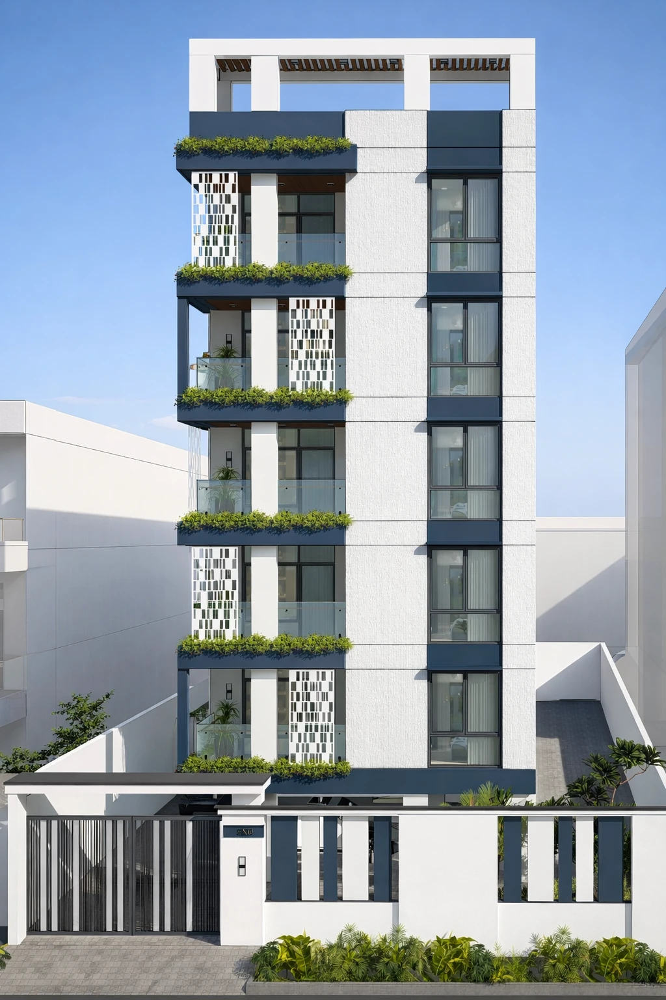
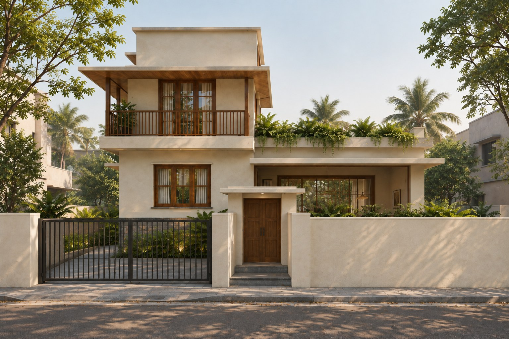
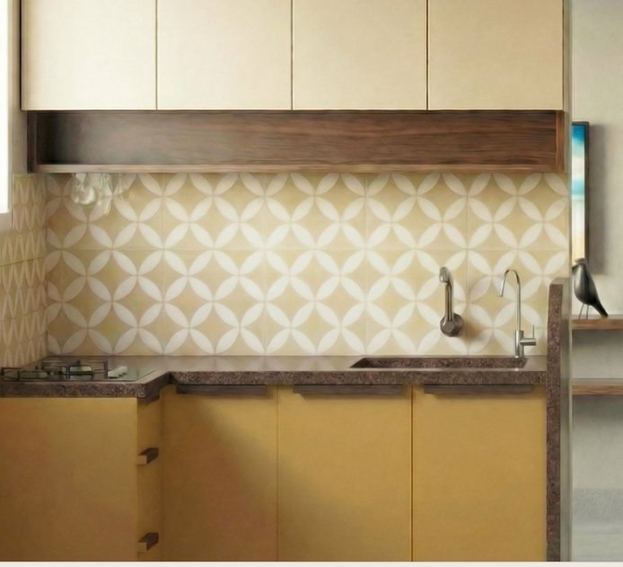
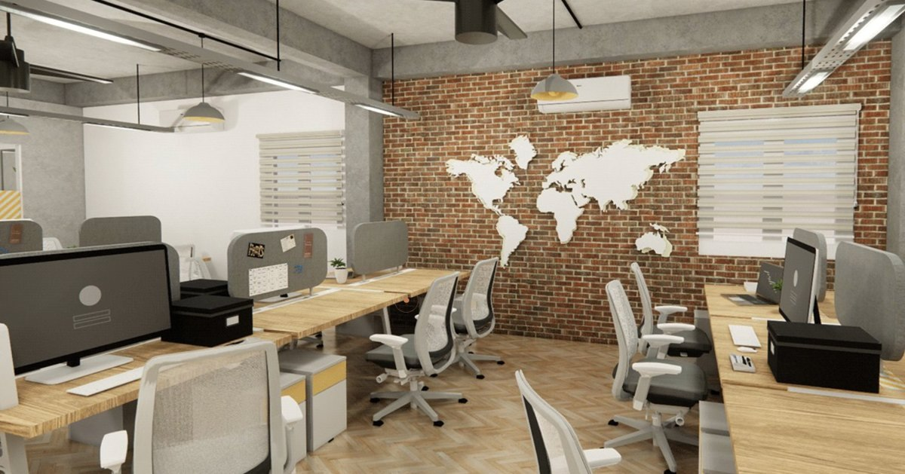
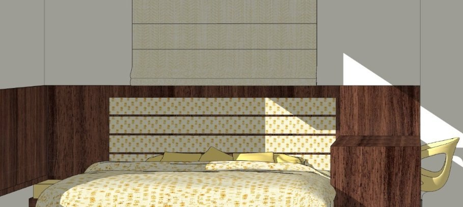

Elevation experiments.
One facade, three approaches to colour, privacy and detail
01 / SELECTED WORK
A selection of spaces, details and material studies.
Each begins with how a place will be used.
Homes and the interiors, objects and details that support everyday routines.
Places shaped around focus, exchange and the rhythms of a working day.
Studies in proportion, pattern, construction and the parts that shape a whole.
Existing spaces reconsidered through light, layout, materials and changing needs.

One facade, three approaches to colour, privacy and detail

A residential proposal explored through plans and interior views

Kitchen planning, cabinetry, materials & finishes

Spatial planning, furniture, colour & materials

Facade, teak glazing, operable shutters & joinery

Lift-up storage bed, mechanism & concealed hardware

A study of teak blocks, brass bells & the door jamb

Pattern, colour & repetition in handmade hydraulic tiles
Each project has its own questions.
Each space, its own response.